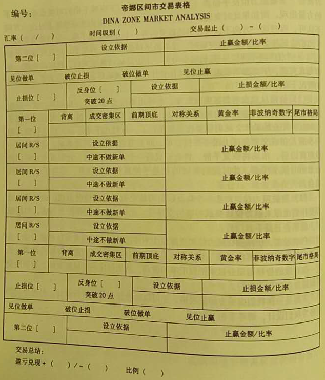

book-forex-trading-step-by-step
Table of Contents
初阶课程
第一阶 外汇市场与外汇交易
- 外汇市场一天交易额约2万亿美元 <> 纽约证交所日交易额250亿美元
- 外汇市场日交易量 = （证券市场日交易量+期货市场日交易量）x 3
- 交易时间选择：最好不要在早晨交易，容易沦为猎物 -> 下午4点开始，参见下表
| Area | City | Opening | Ending |
|---|---|---|---|
| Oceania | Sydney | 7:00 | 15:00 |
| Asia | Tokyo | 8:00 | 16:00 |
| Hongkong | 9:00 | 17:00 | |
| Singapore | 9:00 | 17:00 | |
| Bahrain | 14:00 | 22:00 | |
| Europe | Frankfurt | 16:00 | 0:00 |
| Zurich | 16:00 | 0:00 | |
| Paris | 17:00 | 1:00 | |
| London | 18:00 | 2:00 | |
| North America | New York | 20:00 | 4:00 |
| Los Angels | 21:00 | 5:00 |
四、外汇交易特点
1. 一个24小时运转的市场
从周一早上到周六凌晨
2. 高度流动性的市场
3. 很难坐庄的市场
4. 杠杆效应，借鸡生蛋
5. 较低的交易成本
现在一般3到5个点的交易点差
6. 『迷你』和『微型』交易
7. 没有上涨才能做空的要求
不像证券市场一样存在限制。
做多做空均有机会赢利。
不存在对市场的结构性偏见。
8. 4个主要货币对 vs. 数千只股票
9. 有保证的风险限制
超出账户承受能力将强行平仓，没有赤字。
第二阶 开设交易账户
第三阶 外汇交易过程
一、看懂交易报价
- 货币对：基础货币/报价货币 (basic/bid)
- 汇率：常以货币对形式报价。
- 买进时，汇率 = 购买 1 unit 的 basic 货币需要 ? unit 的 bid 货币
- 卖出时：汇率 = 卖出 1 unit 的 basic 货币获得 ? unit 的 bid 货币
二、做多与做空
- basic 是买进卖出的基础：
- 如果你认为 basic 将上升 -> 汇率上升 -> 买进 -> 做多 (渣)
- 如果你认为 basic 讲下跌 -> 汇率下降 -> 卖出 -> 做空 (估)
三、买价、卖价、点差
- 买价 (bid): 交易商 买入 basic（卖出 bid）的汇率 <-> 交易者 卖出 basic 的汇率
- 卖价 (ask): 交易商 卖出 basic（卖出 bid）的汇率 <-> 交易者 买入 basic 的汇率
- 报价：aaa/bbb (aaa < bbb)
- 对于交易者：sell/buy
- 对于交易商：bid/ask
GBP/USD Bid Ask <---- 交易商 1.7445 1.7449 Sell Buy <---- 交易者
四、点和手
点数计算公式： 点值 = 点数/汇率
例如：uSD/JPY，假定汇率 119.80。汇率变动1点 [ME: 买入或卖出汇率]，表示美元相对日元变动了0.01日元，0.01/119.80=$0.0000834，即美元变动了 0.0000834 美元。
手：
- 标准手：$100,000（十万）
- 迷你手：$10,000
五、交易订单类型
- Market Order: 以当前市场价格进行交易
- Limit Order: 预先定下在某一个特定价位交易。两个基本要素:
- 时间：必须确定有效期限
- 价位：在希望买进或卖出的位置设立特定货币对限价
- Stop-Loss Order：也是限价订单，但针对已经开立尚未了结的头寸，目的是在市场不利于该头寸时及时阻止亏损的扩大。
外汇市场是一个全天候的市场，一个交易日的最后时刻通常被定义为美东时间下午5:00。
[ME: ===begin===] 美国东部时间以位于西五区的纽约、华盛顿等城市为代表，区分夏令时（从每年的三月份的第二个周日开始）和冬令时（从十月份第一个周日开始）。
美东时间与北京时间的换算：
- 美东时间=北京时间-12小时（夏令时）
- 美东时间=北京时间-13小时（冬令时）
Refer to this link@baidu. [ME: ===end===]
要时常查看交易商提供的关于订单的具体信息，并且要弄清如果一个头寸持有超过一天，是否需要支付展期费用。-> 最佳策略：保持订单应用规则简单清晰！
六、展期利息计算
交易商通常的结算时间：美东时间下午5点。
如果此时持有头寸，则需要支付或咱去一个日展期利息（取决于头寸方向）。
-> 如果不想涉及利息方面的损益，只需要确保交易日结束钱结束所有头寸。
合约现货外汇的计息，以合约的金额计算，而不是投资金额 [ME: 乘以杠杆]。
只有买高息货币才有利息收入，卖高息货币不但没有利息收入，投资者还必须支付利息。
利率以交易商公布信息为依据。
利息计算公式：
- 用于直接标价的货币 [ME: bid?]，例如日元、瑞士法郎等：合约金额x1/入市价x利率x天数/360x合约数
- 用于间接标价的货币 [ME: basic?]，例如欧元、英镑、澳元等：合约金额x入市价x利率x天数/360x合约数
七、盈亏计算
使用四、点和手里的公式x合约金额
交易价：
- 买进货币时：使用卖出价（ask/buy），
- 卖出货币时，使用买入价（bid/sell），
计算点差（买卖价差）：
- 买入货币时，在进入交易而不是退出交易时被计入点差
- 卖出货币时，在退出交易而不是进入交易时被计入点差
如果持有某种货币超过了交易商的结算时间，还需要计算展期利息。
八、外汇交易基本术语
1. 主要货币和次要货币（Major and Minor Currencies）
八个最频繁交易的货币：USD, EUR, JPY, GBP, CHF, CAD, NZD 和 AUD。
次要货币不需要担心，非常职业的人士才会关注它们。
最主要分析的五种货币：USD, EUR, JPY, GBP, CHF。– 最具流动性 -> 最适合交易
2. 基础货币（Basic Currency）
常用于报价的基础货币：USD, GBP, EUR, AUD, NZD。
3. 报价货币（Quote Currency）
也被称为点子货币（pip currency）
4. 点（Pip）
一个点 = 0.0001
5. 买价（Bid Price）
外汇市场 [ME: 交易商] 在此位置上买入一个具体货币对的价格。在此价位上， 交易者 可以卖出基础货币。
一般显示在报价的左边。
6. 卖价（Ask Price）
外汇市场 [ME: 交易商] 在此位置上卖出一个具体货币对的价格。在此价位上， 交易者 可以买入基础货币。
一般显示在报价的右边。
也称为开价（Offer Price）
7. 点差（Bid/Ask Spread）
8. 交易成本（Transaction Cost）
买卖价差（点差，= 卖价 - 买价）[ME: 不是交易者某笔交易买入卖出的点差，而是交易商开价的点差]
9. 交叉货币对（Cross Currency）
没有美元的货币对
交易一个 cross currency 相当于交易两个直盘货币对 -> 价格表现通常比较杂乱。交易点差通常都比直盘货币对高。
例如：交易 EUR/GBP 相当于买进 EUR/USD 和卖出 GBP/USD
10. 保证金（Margie）
任何时候进行一笔新的交易时，你账户中的某个百分比的资金将被作为初始保证金（Initial Margin）。– 取决于：货币对、当前汇率、交易数量 [ME: 以及杠杆？]
交易的合约规模常以基础货币标示。
11. 杠杆（Leverage）
交易量 / 保证金
保证金 + 杠杆 = 可能致命的组合
后果：
- 增加收益
- 放大亏损
12. 追加保证金通知（Margin Call）
当你的经纪商注意到你的保证金存款跌至要求的最低水平之下时，就会发出追加保证金通知。这种情况发生在市场与你持有的头寸相反运动时。
如果你账户中的保证金下降到一个预定基准，那么你已经建立的头寸将被部分或全部强行平仓。或许在你的头寸被清算之前你不会收到任何追加保证金通知。
对策：有规律地监视自己的账户盈亏，并为每个头寸设立止损订单（限制头寸带来的风险）。
第四阶 外汇交易分析概述
一、基本面分析与技术面分析
3. 蜡烛图
- 绿色/实心：收盘价 > 开盘价
- 红色/空心：收盘价 < 开盘价
4. 新三值图
第五阶 MT 4.0 软件的使用
一、MetaTrader 简介
二、MetaTrader分析功能图解
1. 功能概述
- 汇率预警声音提示：【终端区】->【警报】
2. 画面及指标设置
3. 寻找相应的品种
即货币对
4. 指标的寻找
【插入】>【技术指标】
5. 蜡烛线的色彩设置
画面上单击右键 > 【属性】，或 F8。在【常用】页里可以选择图标类型（柱状图、折线图、蜡烛图）
[ME: 阳烛 - Lime，阴烛 - Red]
三、更换 MT 4.0 服务器的方法
- 更换服务器：【工具】> 【选项】>【服务器】页
- 新开模拟帐号：【文件】>【开新模拟账户】，最后选择有连接的服务器，就能注册成功
更换服务器的原因：
- 不同服务器速度差别
- 提供品种不同
你的交易账户必须挂靠在交易商指定的服务器上。
常用 MT 4.0 服务器地址：
- 217.74.32.222:443
- 209.61.208.17:443
- 66.148.84.147:443
- 217.8.185.218:443
- 212.12.60.156:443
- 83.142.230.30:443
第六阶 外汇交易风险
- 所有交易者在交易中都存在亏损。
- 90%以上的交易者亏损是因为
- 缺乏交易计划
- 缺乏必要的交易训练
- 拙劣的资金管理
- 不要奢望萍姐几百美元的资本就称为富豪
一、交易亏损的原因及解决方法
亏损单形成的原因：
- 判断错误趋势：看错方向
- 止损位置设置不合理，随意性太强
- 具体入场位置不合适
- 放置的止赢订单过远
解决方法：
- 单边市时顺势而为，重要阻力或支持位时谨慎从事；震荡区间市时干脆休息或在上下突破位处挂单
- 设定止损位置要有技术依据，并根据市道再留5到30点不等的余地：正常单边市可以少留，冲得过急的单边市和震荡市应该多加。 -> 为了平衡操作心理，在判断犹豫时可以采用 复合式止损 （部分仓位加点，部分仓位不加）。最好运用追进止损，保护赢利，提高赢利
- 汇率不合适时千万不要强行入市，预测突破点，并参照突破点打埋伏入世。-> 突破点的预测：看一下短期蜡烛线，找出关键阻力或支持位置 – 借助于 轴心点系统
- 设置止赢位要有技术依据，并根据市道再留5到30点不等的余地：正常单边市可以少留，冲得过急的单边市和震荡市应该多加。为了平衡操作心理，在判断犹豫时可以采用复合式止赢，部分头寸先止赢。最好采用 追击式止赢 （其实就是 追进止损 ）
实际进场交易前应预测 到达止赢的时间 及 转势的条件 ，两个之中有一个已经满足却未赢利，应重新考量盘面，视同交易完成下新单，重定止损、止盈位置，甚至可以考虑先平仓出局。
二、停损的观念
外汇交易不能赚钱是因为没有做对趋势，外汇交易会赔钱是因为没有停损。
最好的交易工具之一就是停损。必须在停损点把情绪反应、自尊心与交易行为分开，直截了当地承认失误。
进行每笔交易同时，一定要预先设立止损点，必须执行。
[ME: 盈利时及时获利离场]
停损自动把你拉回中性思路。
市场上多的是机会，使用停损保护交易资金，争取下一个高获利、低风险交易机会。
三、致命的交易习惯
1. 没能及时停损
控制损失的水平至关重要。
成功的关键：学会如何正确看待亏损
墨菲法则：永远做好预防最坏的情况发生。– 抱最大的希望、尽最大的努力、做最坏的打算。
止损出局就是明白无误地承认自己当初的判断是错误的。
如果你很难坚持系统发出的止损指令，先养成了解部分头寸的习惯：把心理问题剖成两半 – 摆脱结束亏损头寸的冲动，寄希望亏损头寸得救 – 获得更大成都的清醒和精神的集中。
2. 过于在乎盈亏本身
市场会引导交易者的意识单一化 -》上市场的当
必须与市场保持一定的距离，不要一直坐在电脑前面。-》改变数钱（一定监视汇率如何涨跌）的坏习惯 -》对每笔交易设置两个保护性的卖出价格以卖出你的全部头寸。每笔交易都应该有一个入市点和两个出市点（止损位置和止赢位置）。– 如果追随趋势交易，最好使用 追进止损 作为止损和止赢的合二为一工具。
交易者要把每一笔交易的命运放在 交易策略 上。
如果实在无法克制提前卖出的冲动，可以采用复合式卖出法。
3. 操作在时间上的不一致性
市场参与者可以使用多重时间周期（日、小时、分钟）。
非常普遍的错误：在一个时间框架中买入，又在另一个时间框架中卖出。-》没有坚持操作中的一致性。
实质：转换时间框架，交易者推迟了称为失败者的最终感觉。
必须彻底清除这种错误。
如果你在某个时间框架内买入，必须在相同的时间框架内设立卖出点。-》卖出的决策时间框架可以比买进的时间框架更低，但不能更高 [ME: 月 > 日 > 小时]。例如基于日内图表买入，波动时参考日图表 -》错误！
信号：试图扩大止损，通常标志着要犯转换时间框架的错误。
向上调整保护收益可以，乡下调整止损就时区了意义。
4. 等待市场完全确认你的判断
人多的地方钱少。
发财的机会总是留给那些果断行动的人 [ME: 不要等待市场趋势完全清晰]
这是一个指明的交易习惯。
我们玩的是概率，不是代数。
不要追求零风险，使用图表来形成你的买入和卖出决定。
信号：因为自己想要知道更多信息而犹豫
5. 自命不凡
因连续赢利而自满
获利很长时间后，熟悉的市场环境的一些特征将发生变化。
对策：
- 学会在每一个连续的获利之后，退后一步。
- 交易非常顺利的时候，试着减半筹码
- 交易非常顺利的时候，可以减少交易频率
6. 通过错误的方式获利
偏离真正的交易成功之路。
不要依赖好运。
利用 交易日志 工具管理自己的交易行为、情绪、思维和习惯。回顾交易的每一个环节：进场、资金管理、初始止损设置、监视市场、退出。找出错误和违反规则的地方。
两个邪恶的习惯：希望和自我欺骗。-》导致以错误方式获利
7. 寻找支持进场和持有的理由
常见错误：
- 操作时间框架不一致
- 没有坚持初始计划
- 合理化自己的错误行为
计划交易，交易计划！
交易者必须关注几个信号，此时交易者将要合理化自己的错误：
- 问为什么品种会这样表现：背后的理由对于已经计划好的行动没有任何意义。正确的行动应该是先卖出，其次再问为什么。
- 检查新闻：推迟了计划好的行动
- 以『可能』的用于来思考：应该坚持预先指定的交易计划，而不是在中间选择改变。-》培养自律，交易者最宝贵的品质
- 卖出全部的头寸有困难
四、从模拟账户开始
成功只属于一小部分交易者。
失败的主要原因：缺乏交易所要求的纪律。
外汇交易不是一个迅速报复的路子，而是一个需要花费时间和精力学习的技巧。
作者亏损了两年才达到月均10%的利润。
方法 + 努力
在模拟账户上没有稳定赢利之前，不要开立真实账户进行实际交易。（至少坚持两个月的模拟交易）
第七阶 外汇交易员毙命的首要原因
一、杠杆杀手
许多职业交易者一般采用每50K美元交易一手的方法（一个50K的账户交易不超过一手）。[ME: 杠杆为2???]
事实：国际对冲基金采用30倍的杠杆率已经算很高了。
菜鸟级别的交易者刚开始交易时，应该把仓量放到最低，因为此时以亏损为主。
反其道而行之：最大数额开设账户，最小数额进行交易！逐渐增加交易额。
最坏的结果：穿仓！
二、杠杆的定义
杠杆极大增加了财务实力，同时放大了财务风险。
个人回报率 = 总的投资回报率 * 杠杆率
企业的财务杠杆：流动比率（负债率），即利用贷款经营获利
如果采用了过高杠杆，必须通过减少操作资金的比率来控制总体风险。
控制杠杆 = 控制使用资金比率
三、保证金的定义
从资金管理和风险控制两个角度解释。
例子：通过1K美元控制了100K美元的资金进行交易 -》杠杆比率 100:1，控制100K美元所需的1K美元就是保证金。
保证金是交易商为了限制他所面临的风险而采取的措施。他要防止交易者的交易失误而带给他的损失。
保证金：在经纪商哪里开立头寸所需要的保证。用来保证交易者的交易头寸被恰当地简历和保持。经纪商利用你和其他交易者的保证金与银行进行交易。
保证金通常被标识为头寸总金额的某个百分比。根据保证金可以计算出账户能动用的最大杠杆。
外汇市场常见的保证金要求和对应杠杆：
| 保证金要求 | 最大杠杆 |
|---|---|
| 5% | 20:1 |
| 3% | 33:1 |
| 2% | 50:1 |
| 1% | 100:1 |
| 0.5% | 200:1 |
| 0.25% | 400:1 |
其他概念：
- 要求保证金：基本等于保证金。
- 账户保证金：指交易账户中所有的资金数量，也就是属于你的那部分资金
- 占用保证金：为了保证你的当前开立的头寸，而被经纪商锁定的那部分资金。虽然这些资金仍然属于你，但你不能动用它们，除非交易商解除锁定。
- 可用保证金：你的账户中可以用来开立新头寸的那部分资金。
- 保证金通知：如果账户中的权益低于你的可用保证金数额，那么你将收到（追加）保证金通知，并且你所开立的所有或者部分头寸将被按照市价强行平仓。
四、保证金通知的例子
起始账户状态：
| Accounts | Balance | Equity | Used Mrg | Usbl Mrg |
|---|---|---|---|---|
| 007 | $10000.00 | $10000.00 | $0.00 | $10000.00 |
- Equity: 权益/净值
- Used Mrg: 占用保证金
- Usbl Mrg：可用保证金
公式: 可用保证金 = 权益 - 占用保证金
Note: 权益（equity）而不是余额（balance）决定可用保证金。是否收到追加保证金通知也是由权益决定的。
- Equity > Used Mrg：不会收到保证金通知
- Equity <= Used Mrg: 将收到保证金通知
假设：保证金要求是 1%（杠杆 100:1），买入1『迷你』手 EUR/USD。
此时账户状态：
| Accounts | Balance | Equity | Used Mrg | Usbl Mrg |
|---|---|---|---|---|
| 007 | $10000.00 | $10000.00 | $100.00 | $9900.00 |
如果在同样价位上了解这『迷你』手头寸（卖出），那么账户状态将汇到初始状态。
如果你信心倍增，又加仓买入了79『迷你』手EUR/USD。此时账户状态：
| Accounts | Balance | Equity | Used Mrg | Usbl Mrg |
|---|---|---|---|---|
| 007 | $10000.00 | $10000.00 | $8000.00 | $2000.00 |
假如此时 EUR/USD 大幅度下滑，权益（equity）和可用保证金（usbl mrg）都将下降，占用保证金（used mrg）还处在 8000 美元。一旦你的权益（equity）跌破8000美元（equity <= used mrg），你将收到一个保证金通知，你的 80 『迷你』手头寸将会部分或全部以市价平仓。
计算过程 ：
- 1 pip 在『迷你』账户情况下相当于 1美元 [ME: 标准手 1pip = 10USD]
- 下跌 25pip，80『迷你』手，浮动亏损 = 80 x 25 x 1 = 2000 USD
- 此时 equity 将下降到 8000 USD = used mrg -> 处于追加保证金的情况：可用保证金（usbl mrg）= 0，[ME: 也就是说如果再下跌的话，如果不强行平仓就等于提高杠杆率，不符合公平对赌原则]
此时账户状态：
| Accounts | Balance | Equity | Used Mrg | Usbl Mrg |
|---|---|---|---|---|
| 007 | $10000.00 | $8000.00 | $8000.00 | $0.00 |
- 净值（equity）下降到 8000 USD：计算了浮动盈亏的资金总额
- 余额（balance）仍然是 10000 USD：已经兑现了盈亏的资金总额 [ME: 未了结头寸]
- 在持有亏损未了结头寸的情况下：余额（balance）> 净值（equity）
- 在持有赢利未了结头寸的情况下：余额（balance）< 净值（equity）
- 占用保证金（used mrg）仍然是 8000 USD
- 可用保证金（usbl mrg）是 0
当所有仓位被强行平掉以后，账户状态：
| Accounts | Balance | Equity | Used Mrg | Usbl Mrg |
|---|---|---|---|---|
| 007 | $8000.00 | $8000.00 | $0.00 | $8000.00 |
Note: 如果除去点差（spread），价格移动得更少（比如20pip）就能让交易者被强行平仓。-> 开立头寸时一定要先计算出你能承受的最大亏损幅度。本例的情况损失了账户的20%！
五、更高的杠杆
最大杠杆：取决于交易商要求的保证金，例如要求保证金 1%，则最大杠杆为 100:1
真实杠杆 = 头寸总价值 / 交易账户的总价值
例子：账户初始资金 10K USD，在汇率为 1.0000 时购买 100K USD 的 EUR/USD，则头寸总价值 100K USD，余额（balance）则是 10K USD -> 真实杠杆率为 10:1。
例子：如果又以同样汇率购买了另外一手，则真实杠杆率变为 20:1
杠杆放大了价格运动的影响，假设初始资金 100K USD，最大杠杆 100:1
- 真实杠杆为 1:1 时（1标准手头寸），跌 9900 pips（价格变动99%） 才会收到追加保证金通知: 9900 pips = 99K USD / (10 USD/pip * 1标准手)，此时损失99%
平仓前：
Accounts Balance Equity Used Mrg Usbl Mrg 007 $100000.00 $100000.00 $1000.00 $99000.00 平仓后：
Accounts Balance Equity Used Mrg Usbl Mrg 007 $1000.00 $1000.00 $0.00 $1000.00 - 真实杠杆为 20:1 时（20标准手头寸），跌 400 pips（价格变动4%）将会收到追加保证金通知: 400 pips = 80K USD / (10 USD/pip * 20标准手)，此时损失80%
平仓前：
Accounts Balance Equity Used Mrg Usbl Mrg 007 $100000.00 $100000.00 $20000.00 $80000.00 平仓后：
Accounts Balance Equity Used Mrg Usbl Mrg 007 $20000.00 $20000.00 $0.00 $20000.00
不同杠杆比率，汇率变动百分比引起账户净值变动百分比：
| 杠杆比率 | 保证金要求 | 账户损益变化 |
|---|---|---|
| 100:1 | 1% | 100% |
| 50:1 | 1% | 50% |
| 33:1 | 1% | 33% |
| 20:1 | 1% | 20% |
| 10:1 | 1% | 10% |
| 5:1 | 1% | 5% |
| 3:1 | 1% | 3% |
| 1:1 | 1% | 1% |
-> 你利用的真实杠杆越高，那么你留给市场的活动空间越小，越容易收到保证金通知！
[ME: 盈亏数 = pip数 * 10$/(标准手*pip) * 标准手数]
重要: 较低的真实杠杆 (经验丰富的交易者大多使用 5:1 或 3:1 的真实杠杆) 和 足够的起始资金 使得你能在经历较小亏损后还能继续在市场中把握机会。– 交易是一种概率游戏，必须交易足够多的次数才可能最终看出交易的效果。
六、杠杆如何影响交易成本
账户余额下降 -> 真实杠杆上升 -> 点差费用上升 -> 吃掉更多的账户余额：恶性循环
随着真实杠杆比率上升，交易成本如何变化：(迷你手，点差5）
| 杠杆比率 | 保证金要求 | 交易成本占要求保证金的比率 |
|---|---|---|
| 200:1 | $50 | 10% |
| 100:1 | $100 | 5% |
| 50:1 | $200 | 2.5% |
| 33:1 | $330 | 1.5% |
| 20:1 | $500 | 1% |
| 10:1 | $1000 | 0.5% |
| 5:1 | $2000 | 0.25% |
| 3:1 | $3300 | 0.1% |
| 1:1 | $10000 | 0.05% |
七、不要低估杠杆
懂得什么时候利用杠杆，利用多大的杠杆对于交易成功至关重要。
在大多数人乱用杠杆的情况下，谨慎的交易者反而更容易赚钱。因为短期投机是个 零和游戏
经纪商希望交易者以短期心态进行交易 – 赚取点差。
想要成功，首先要学会不用杠杆成功交易。-> 安全度过最初的学习阶段，保护资本。
当你能够持续不断赚取利润时，就可以释放这个终极武器的力量了！
中阶课程
第八阶 日本蜡烛图技术
- 较长的实体（read body）意味着买卖力量强劲 – 越长越强
- 较短的实体意味着买卖某方的力量不占优势
- 白色蜡烛线：买家占优势意味着看多 -> 长：买方激进，多方击败空方
- 黑色蜡烛线：卖家占优势意味着看空 -> 长：卖方激进，空方击败多方
- 较长上影线（upper shadow）+较短下影线（lower shadow）：买方曾用力推高价格，但卖方更强有力的打压使得价格下跌从而接近开盘价
- 较短上影线（upper shadow）+较长下影线（lower shadow）：卖方曾用力推高价格，但买方更强有力的推动使得价格上涨从而接近开盘价
三、蜡烛线的基本形态
1. 纺锤线（Spinning Tops）
- 较长上影线+较短实体+较长下影线
- 实体颜色不重要
- 预示买卖双方犹豫不决或势均力敌
- 上升趋势中出现纺锤线：意味着买家力量比较而言已经丧失了优势 -> 价格趋势可能翻转
- 下降趋势中出现纺锤线：意味着卖家力量比较而言已经丧失了优势 -> 价格趋势可能翻转
2. 是体现（Marubozu）
- 不存在影线
- 白色：后市看涨
- 黑色：后市看跌
3. 十字线（Doji）
- 开盘价 = 收盘价 – 实体几乎为一条横线
- 四种类型： [ME: 参考 p89 分析]
- 长脚十字
- 蜻蜓十字
- 墓碑十字
- 一字线
四、翻转形态（Reversal Patterns）
- 翻转形态前必须存在一段趋势才能在翻转形态出现时确认。
- 看涨：先前趋势下跌
- 看跌：先前趋势上涨
1. 锤头和吊颈（Hammer and Hanging Man）
[ME: p90]
- 锤头（颜色不重要）：形成在下降趋势中，实体位于交易区域下端 -> 市场正在夯实底部，看涨
- 吊颈（颜色不重要）：形成在上涨趋势中，实体位于交易区域上端 -> 卖方数量开始压倒买方，看跌
2. 倒锤头和流星（Inverted Hammer and Shooting Star）
[ME: p93，类似于锤头/吊颈但方向相反]
[ME: ===begin===]
- 下降趋势中出现了锤头或倒锤头：可能反转
- 上升趋势中出现了吊颈：可能反转
- 上升趋势中出现了流星：确定无疑看跌
[ME: ===begin===]
五、典型的蜡烛线形态
[ME: p94-p110]
- 蜡烛线形态最能反映金融市场的 群体心理
- 当汇率在一个长期单边走势（连续下跌、连续上涨、连续横盘）后形成一个或多个经典的蜡烛线组合，是波段操作的 最重要 信号提示。[ME: ML 和 AI 最有可能应用的领域？]
第九阶 支撑和阻力、趋势线和通道
一、支撑和阻力
- 市场波动前进时，就形成了阻力和支撑
1. 找出阻力和支撑水平
- 阻力和支撑水平并不是一个精确的数字
- 阻力和支撑的测试经常以影线的方式呈现出来。例如：影线突破了阻力水平，但收盘价却位于阻力水平之下
- 注意两点
- 当价格穿越阻力水平后，阻力就变成了支撑
- 一个阻力或支撑水平受到的价格测试越多，这个阻力或支撑水平的力度就越大
2. 如何确认支撑或阻力真的被突破
- 没有准确答案
- 为了过滤掉假的突破，应该更多地将阻力和支撑作为一个区域而不是一个精确具体的数字
- -> 方法：在线图而不是蜡烛图上分析阻力和支撑 <- 仙途仅仅描绘收盘价，蜡烛图则同时给出了极端高价和低价 – 市场情绪造成的噪声运动
二、趋势线
- 今天使用最普遍的分析技术，同时也是最没有得到充分运用的技术
- 最一般的画法：
- 上升趋势线：沿着容易辨认的底部支撑区域（谷底）作出
- 下降趋势线：沿着容易辨认的顶部阻力区域（峰顶）做出
三、通道
- 从趋势线理论更进一步：画出两条上升或下降角度相同的平行线 -> 建立了一个通道
- 画法：
- 建立上升通道：
- 先画出一条上升趋势
- 找到最近一个峰顶，以此峰顶为起点，做一条平行于上升趋势线的射线
- 建立下降通道：
- 先画出一条下降趋势
- 找到最近一个谷底，以此谷底为起点，做一条平行于下降趋势线的射线
- 建立上升通道：
- 当价格触及底部趋势线时：看涨，买入机会
- 当价格触及顶部趋势线时：看跌，卖出机会
四、利用阻力和支撑的交易系统
- 自由交易者能够获得的有效信息量有限，无法通过对 基本面 的准确把握达到在短期时间框架上赚钱的目的 [ME: 是否意味着可以根据基本面分析做较长时间框架？多长？]
- -> 『价格决定一切』的 技术分析 信条：利用技术分析找到
- 市场趋势
- 进出场的关键位置
- -> 交易策略（轴线点系统、斐波那契分割系统以及其他阻力支撑分析交易系统的基础）：『见位做单，破位做单』
- 简单：通常在关键位置反市场方向开立头寸（轻仓），突破关键位置后才顺着市场方向操作（重仓）
- 在阻力位做空（轻仓）
- 在支撑位多做（轻仓）
- 突破阻力位反手做多（重仓）
- 突破支撑位反手做空（重仓）
- 简单：通常在关键位置反市场方向开立头寸（轻仓），突破关键位置后才顺着市场方向操作（重仓）
- -> 反向系统，趋势系统，既适合区间市场页适合趋势市场
- 如果能够利用技术工具识别出突破的有效程度，我们就可以有选择地进行操作，而不是一味地『先反向再顺势』
- 交易中会面临频繁的假突破 -> 识别出假突破时，要果断平掉追突破时的单子
- 首先要确定阻力位和支撑位，然后再根据价格在这些区间的位置和运动方向决定策略，然后具体执行。
确定阻力和支撑位置的方法
阻力位和支撑位的位置
- 成交密集区上沿和下沿
- 前期高点和低点
- 当价格向前期的成交密集区运动时，前期的成交密集区对价格有压力 -> 阻力位和支撑位
- 斐波那契回调线和扩展线位置
- 轴线点系统的关键位置
- 前日的最高价、最低价和今日的开盘价
具体操作策略
1. 当价格正处于成交密集区里面时：
- 上沿即阻力，突破上沿时，
- 此时所有在此成交密集区的多方将心情舒畅，因为他赚到钱了 -> 他继续做多加仓的可能性增加；
- 在此成交密集区的空方将会紧张，因为他亏钱了 -> 很可能急于止损 -> 平掉空单
- -> 此时有两种力量：加多单 vs. 平空单 -> 都将使价格继续向上
- -> 此时我们『突破阻力位反手做多（重仓）』
- 突破下沿时：同理双重向下的力量 -> 『突破支撑位反手做空（重仓）』
- 出现假突破时：一个方向不认可，一般价格会向另一个边沿运动甚至突破，此时的突破一般都是真突破（喇叭形态是在投资者比较疯狂的情况下才会产生，一般不会发生） -> 果断平掉追突破的单子，反手开新仓
2. 价格从成交密集区突破出来时
- 会冲出成交密集区一段距离，这段距离就是我们的利润。
- 这一种速度会很快 [ME: 惯性???]，要在刚开始冲的一瞬间（突破时）完成平仓和反手开仓的动作。要求速度快。 -> 建议谨慎的人在成交密集区上沿不要挂空单，而是等它突破后建多单。
- 价格冲出一段距离以后，市场将恢复平静 -> 形成另一个成交密集区 -> 成交量比刚冲出来时下降很多 -> 平掉盈利单，休息，等待
3. 突破阻力位
- 产生一个高点后可能会有反扑，此时反扑就会反扑到由原来阻力位转换成的新支撑位 -> 此时可以在支撑位做多。如果破了，就平仓且反手
归纳
- 价格会在阻力位和支撑位中不停运动
- 认清阻力位和支撑位，围绕『破』做文章，做好是『不破不立』[ME: 因为作者主张在突破时反手重仓操作]
- -> 通过这顶一些有效的价格运动分区来把握汇率的波动，从而制订一个风险报酬比合理的交易框架，严格执行
交易专用表格
